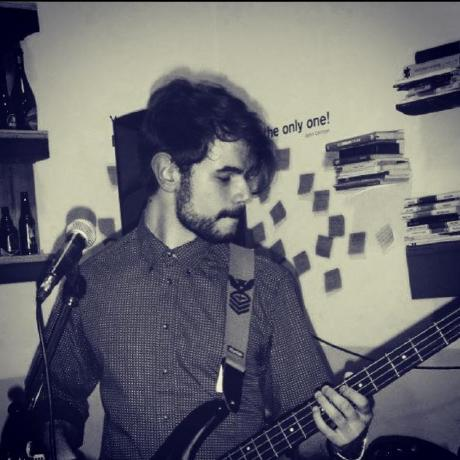

Ciao! Sono Luca. Sono nato a Salerno il 13/01/1994 e da qualche anno mi sono trasferito a Cremona per imparare a costruire strumenti ad arco.
Mi piace suonare la chitarra, il basso e cantare. Ascoltare musica. Guardare serie TV e anime online. Giocare ai videogiochi e disegnare.
"I am the storm that is approaching/ Provoking black clouds in isolation/ I am reclaimer of my name/ Born in flames, I have been blessed/ My family crest is a demon of death/ Forsakened, I am awakened A phoenix's ash in dark divine Descending misery/ Destiny chasing time" Bury The Light - DMC5 OST